Ícones do catálogo
Cobertura de ícones dos produtos ativos do catálogo: ícones do Microsoft Fluent Emoji (licença MIT), variação Color, e o complemento próprio no mesmo estilo. Produto sem ícone usa o da seção. O ícone sempre acompanha o nome, nunca o substitui.
Página gerada por ./gradlew :shared:generateIconsPage a partir de catalog/; não editar à mão.
Por seção
| Seção | Produtos | Fiel | Aproximado | Sem ícone |
|---|---|---|---|---|
| Hortifrúti | 127 | 44 | 41 | 42 |
| Padaria | 39 | 10 | 21 | 8 |
| Açougue e peixaria | 80 | 33 | 37 | 10 |
| Frios e laticínios | 52 | 23 | 15 | 14 |
| Congelados | 18 | 4 | 5 | 9 |
| Mercearia | 149 | 39 | 75 | 35 |
| Bebidas | 28 | 5 | 14 | 9 |
| Limpeza | 51 | 19 | 16 | 16 |
| Higiene e farmácia | 65 | 19 | 27 | 19 |
| Pet | 19 | 2 | 10 | 7 |
| Outros | 34 | 18 | 10 | 6 |
| Total | 662 | 216 | 271 | 175 |
No tamanho da lista
Na lista o ícone fica em torno de 32–40dp, no fundo claro e no escuro.


Fila do complemento próprio
Os desenhos que faltam, de catalog/own-icons-queue.csv. Cada desenho cobre um ou mais produtos sem ícone. Prioridade 1: compra de toda semana ou todo mês; 2: compra comum; 3: ocasional ou regional. A imagem é o ícone da seção, usado até o desenho ficar pronto.
Prioridade 2: 57 desenhos, 103 produtos
 Enxaguante bucalEnxaguante bucalprioridade 2AlgodãoAlgodão, Cotoneteprioridade 2Gaze e esparadrapoGaze, Esparadrapo, Ataduraprioridade 2Lenço umedecidoLenço umedecidoPacote com a tampa abertaprioridade 2Espuma de barbearEspuma de barbearprioridade 2TalcoTalcoprioridade 2Cortador de unhaCortador de unhaprioridade 2Escova de cabeloEscova de cabeloprioridade 2Pastilha para gargantaPastilha para gargantaprioridade 2
Enxaguante bucalEnxaguante bucalprioridade 2AlgodãoAlgodão, Cotoneteprioridade 2Gaze e esparadrapoGaze, Esparadrapo, Ataduraprioridade 2Lenço umedecidoLenço umedecidoPacote com a tampa abertaprioridade 2Espuma de barbearEspuma de barbearprioridade 2TalcoTalcoprioridade 2Cortador de unhaCortador de unhaprioridade 2Escova de cabeloEscova de cabeloprioridade 2Pastilha para gargantaPastilha para gargantaprioridade 2 Copo descartávelCopo descartável, Prato descartável, Canudoprioridade 2
Copo descartávelCopo descartável, Prato descartável, Canudoprioridade 2 Caixa de amido de milhoAmido de milho, Farinha de milhoprioridade 2Caixa de mistura para boloMistura para bolo, Pó para pudim, Gelatinaprioridade 2Saco de polvilhoPolvilho doce, Polvilho azedo, Sagu, Farinha de roscaprioridade 2Pacote de torradaTorrada, Biscoito de polvilho, Rosquinhaprioridade 2Pacote de salgadinhoBatata chips, Batata palha, Salgadinho de pacoteprioridade 2Pacote de grãosChia, Linhaça, Proteína de soja, Ervilha seca, Canjicaprioridade 2Molho shoyuMolho shoyu, Molho inglês, Molho de pimentaGarrafinha escuraprioridade 2Azeite de dendêAzeite de dendêprioridade 2BanhaBanhaprioridade 2Pacote de farofa prontaFarofa prontaprioridade 2Barra de cerealBarra de cerealprioridade 2Doce em barraBananada, Rapaduraprioridade 2Ameixa secaAmeixa seca, AmeixaA ameixa fresca fica aproximadaprioridade 2
Caixa de amido de milhoAmido de milho, Farinha de milhoprioridade 2Caixa de mistura para boloMistura para bolo, Pó para pudim, Gelatinaprioridade 2Saco de polvilhoPolvilho doce, Polvilho azedo, Sagu, Farinha de roscaprioridade 2Pacote de torradaTorrada, Biscoito de polvilho, Rosquinhaprioridade 2Pacote de salgadinhoBatata chips, Batata palha, Salgadinho de pacoteprioridade 2Pacote de grãosChia, Linhaça, Proteína de soja, Ervilha seca, Canjicaprioridade 2Molho shoyuMolho shoyu, Molho inglês, Molho de pimentaGarrafinha escuraprioridade 2Azeite de dendêAzeite de dendêprioridade 2BanhaBanhaprioridade 2Pacote de farofa prontaFarofa prontaprioridade 2Barra de cerealBarra de cerealprioridade 2Doce em barraBananada, Rapaduraprioridade 2Ameixa secaAmeixa seca, AmeixaA ameixa fresca fica aproximadaprioridade 2 Suco em póSuco em pó, Suco concentradoprioridade 2
Suco em póSuco em pó, Suco concentradoprioridade 2 Leite fermentadoLeite fermentado, Bebida lácteaFrasquinhoprioridade 2Queijo raladoQueijo raladoprioridade 2RicotaRicota, Queijo cottage, Tofuprioridade 2SalameSalame, Salame colonial, Copa, Lombo canadense, Paioprioridade 2Massa de pastelMassa de pastel, Macarrão frescoprioridade 2BisnaguinhaBisnaguinhaprioridade 2PanetonePanetoneprioridade 2CoxinhaCoxinha, Esfihaprioridade 2
Leite fermentadoLeite fermentado, Bebida lácteaFrasquinhoprioridade 2Queijo raladoQueijo raladoprioridade 2RicotaRicota, Queijo cottage, Tofuprioridade 2SalameSalame, Salame colonial, Copa, Lombo canadense, Paioprioridade 2Massa de pastelMassa de pastel, Macarrão frescoprioridade 2BisnaguinhaBisnaguinhaprioridade 2PanetonePanetoneprioridade 2CoxinhaCoxinha, Esfihaprioridade 2 TorresmoTorresmoprioridade 2Kit feijoadaKit feijoada, Pé de porco, Orelha de porcoprioridade 2Pão de alhoPão de alhoprioridade 2
TorresmoTorresmoprioridade 2Kit feijoadaKit feijoada, Pé de porco, Orelha de porcoprioridade 2Pão de alhoPão de alhoprioridade 2 Areia de gatoAreia de gatoprioridade 2Saco de carvãoCarvãoprioridade 2
Areia de gatoAreia de gatoprioridade 2Saco de carvãoCarvãoprioridade 2 MandioquinhaMandioquinhaprioridade 2InhameInhame, Caráprioridade 2RabaneteRabanete, Naboprioridade 2Alho-poróAlho-poró, Salsão, Erva-doceprioridade 2
MandioquinhaMandioquinhaprioridade 2InhameInhame, Caráprioridade 2RabaneteRabanete, Naboprioridade 2Alho-poróAlho-poró, Salsão, Erva-doceprioridade 2Prioridade 3: 52 desenhos, 72 produtos
JilóJilóprioridade 3MaxixeMaxixeprioridade 3Couve-de-bruxelasCouve-de-bruxelasprioridade 3AspargoAspargoprioridade 3AlcachofraAlcachofraprioridade 3CaquiCaquiprioridade 3FramboesaFramboesaprioridade 3FigoFigoprioridade 3RomãRomãprioridade 3LichiaLichiaprioridade 3PhysalisPhysalisprioridade 3CarambolaCarambolaprioridade 3PitaiaPitaiaprioridade 3TamarindoTamarindoprioridade 3JacaJacaprioridade 3CajuCaju, CajuínaA cajuína fica aproximadaprioridade 3PitangaPitangaprioridade 3JabuticabaJabuticabaprioridade 3Fruta-do-condeFruta-do-conde, Graviolaprioridade 3AçaíAçaíprioridade 3CupuaçuCupuaçu, Bacuriprioridade 3Frutinhas do NordesteCajá, Seriguela, Umbu, Pitomba, Mangaba, SapotiUm cacho de frutinhas amarelas e vermelhasprioridade 3Frutos de palmeiraBuriti, Tucumã, Pupunha, Pequiprioridade 3Massa pubaMassa pubaprioridade 3TucupiTucupiGarrafa de plástico com o caldo amareloprioridade 3Manteiga de garrafaManteiga de garrafaprioridade 3PatêPatêprioridade 3Mocotó e dobradinhaMocotó, Dobradinhaprioridade 3Carne de bode e carneiroCarne de bode, Carne de carneiroprioridade 3Broa e pão de batataBroa, Pão de batataprioridade 3CucaCucaprioridade 3Pão de melPão de melprioridade 3GranuladoGranuladoprioridade 3ChicleteChicleteprioridade 3Garrafa de cachaçaCachaça, Vodca, Licorprioridade 3Lata de bebidaEnergético, Isotônico, Água tônicaprioridade 3Tintura de cabeloTintura de cabeloprioridade 3Elástico de cabeloElástico de cabeloprioridade 3AcetonaAcetonaprioridade 3PerfumePerfumeprioridade 3PreservativoPreservativoprioridade 3Porta-comprimidosPorta-comprimidosprioridade 3Bolsa térmicaBolsa térmicaprioridade 3Tapete higiênicoTapete higiênico, Saquinho para cocôprioridade 3AntipulgasAntipulgasprioridade 3ColeiraColeiraprioridade 3ComedouroComedouroprioridade 3Brinquedo para petBrinquedo para petprioridade 3Fita adesivaFita adesiva, Colaprioridade 3Hortifrúti
BananaBananafielBanana-da-terraBananaaproximado MaçãRed applefiel
MaçãRed applefiel Maçã verdeGreen applefiel
Maçã verdeGreen applefiel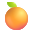
LaranjaTangerinefiel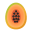
Mamãoícone própriofiel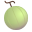
MelãoMelonfiel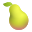
PeraPearfielAmeixaícone da seçãosem íconefila: prioridade 2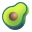
AbacateAvocadofiel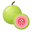
Goiabaícone própriofiel KiwiKiwi fruitfielCaquiícone da seçãosem íconefila: prioridade 3Framboesaícone da seçãosem íconefila: prioridade 3Figoícone da seçãosem íconefila: prioridade 3Romãícone da seçãosem íconefila: prioridade 3Lichiaícone da seçãosem íconefila: prioridade 3Physalisícone da seçãosem íconefila: prioridade 3Carambolaícone da seçãosem íconefila: prioridade 3Pitaiaícone da seçãosem íconefila: prioridade 3Tamarindoícone da seçãosem íconefila: prioridade 3Jacaícone da seçãosem íconefila: prioridade 3Cajuícone da seçãosem íconefila: prioridade 3Pitangaícone da seçãosem íconefila: prioridade 3Jabuticabaícone da seçãosem íconefila: prioridade 3Fruta-do-condeícone da seçãosem íconefila: prioridade 3Graviolaícone da seçãosem íconefila: prioridade 3Açaíícone da seçãosem íconefila: prioridade 3Cupuaçuícone da seçãosem íconefila: prioridade 3Cajáícone da seçãosem íconefila: prioridade 3Seriguelaícone da seçãosem íconefila: prioridade 3Umbuícone da seçãosem íconefila: prioridade 3Pitombaícone da seçãosem íconefila: prioridade 3Pequiícone da seçãosem íconefila: prioridade 3Bacuriícone da seçãosem íconefila: prioridade 3Mangabaícone da seçãosem íconefila: prioridade 3Sapotiícone da seçãosem íconefila: prioridade 3Buritiícone da seçãosem íconefila: prioridade 3Tucumãícone da seçãosem íconefila: prioridade 3Pupunhaícone da seçãosem íconefila: prioridade 3
KiwiKiwi fruitfielCaquiícone da seçãosem íconefila: prioridade 3Framboesaícone da seçãosem íconefila: prioridade 3Figoícone da seçãosem íconefila: prioridade 3Romãícone da seçãosem íconefila: prioridade 3Lichiaícone da seçãosem íconefila: prioridade 3Physalisícone da seçãosem íconefila: prioridade 3Carambolaícone da seçãosem íconefila: prioridade 3Pitaiaícone da seçãosem íconefila: prioridade 3Tamarindoícone da seçãosem íconefila: prioridade 3Jacaícone da seçãosem íconefila: prioridade 3Cajuícone da seçãosem íconefila: prioridade 3Pitangaícone da seçãosem íconefila: prioridade 3Jabuticabaícone da seçãosem íconefila: prioridade 3Fruta-do-condeícone da seçãosem íconefila: prioridade 3Graviolaícone da seçãosem íconefila: prioridade 3Açaíícone da seçãosem íconefila: prioridade 3Cupuaçuícone da seçãosem íconefila: prioridade 3Cajáícone da seçãosem íconefila: prioridade 3Seriguelaícone da seçãosem íconefila: prioridade 3Umbuícone da seçãosem íconefila: prioridade 3Pitombaícone da seçãosem íconefila: prioridade 3Pequiícone da seçãosem íconefila: prioridade 3Bacuriícone da seçãosem íconefila: prioridade 3Mangabaícone da seçãosem íconefila: prioridade 3Sapotiícone da seçãosem íconefila: prioridade 3Buritiícone da seçãosem íconefila: prioridade 3Tucumãícone da seçãosem íconefila: prioridade 3Pupunhaícone da seçãosem íconefila: prioridade 3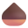
PinhãoChestnutaproximado Batata-doceRoasted sweet potatoaproximadoMandioquinhaícone da seçãosem íconefila: prioridade 2Inhameícone da seçãosem íconefila: prioridade 2Caráícone da seçãosem íconefila: prioridade 2
Batata-doceRoasted sweet potatoaproximadoMandioquinhaícone da seçãosem íconefila: prioridade 2Inhameícone da seçãosem íconefila: prioridade 2Caráícone da seçãosem íconefila: prioridade 2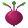
Beterrabaícone própriofielRabaneteícone da seçãosem íconefila: prioridade 2Naboícone da seçãosem íconefila: prioridade 2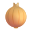
CebolaOnionfielAlho-poróícone da seçãosem íconefila: prioridade 2 GengibreGinger rootfiel
GengibreGinger rootfiel PimentãoBell pepperfiel
PimentãoBell pepperfiel PimentaHot pepperfielPimenta-de-cheiroHot pepperaproximadoJilóícone da seçãosem íconefila: prioridade 3Maxixeícone da seçãosem íconefila: prioridade 3
PimentaHot pepperfielPimenta-de-cheiroHot pepperaproximadoJilóícone da seçãosem íconefila: prioridade 3Maxixeícone da seçãosem íconefila: prioridade 3 VagemPea podaproximadoErvilha-tortaPea podfiel
VagemPea podaproximadoErvilha-tortaPea podfiel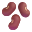
Feijão-verdeBeansaproximado MilhoEar of cornfielCouve-de-bruxelasícone da seçãosem íconefila: prioridade 3Salsãoícone da seçãosem íconefila: prioridade 2Erva-doceícone da seçãosem íconefila: prioridade 2Aspargoícone da seçãosem íconefila: prioridade 3Alcachofraícone da seçãosem íconefila: prioridade 3
MilhoEar of cornfielCouve-de-bruxelasícone da seçãosem íconefila: prioridade 3Salsãoícone da seçãosem íconefila: prioridade 2Erva-doceícone da seçãosem íconefila: prioridade 2Aspargoícone da seçãosem íconefila: prioridade 3Alcachofraícone da seçãosem íconefila: prioridade 3 CogumeloBrown mushroomfielAlfaceLeafy greenaproximadoCouveLeafy greenaproximadoRúculaLeafy greenaproximadoAgriãoLeafy greenaproximadoEspinafreLeafy greenaproximadoChicóriaLeafy greenaproximadoAlmeirãoLeafy greenaproximadoAcelgaLeafy greenaproximadoMostarda em folhaLeafy greenaproximadoTaiobaLeafy greenaproximadoOra-pro-nóbisLeafy greenaproximadoVinagreiraLeafy greenaproximado
CogumeloBrown mushroomfielAlfaceLeafy greenaproximadoCouveLeafy greenaproximadoRúculaLeafy greenaproximadoAgriãoLeafy greenaproximadoEspinafreLeafy greenaproximadoChicóriaLeafy greenaproximadoAlmeirãoLeafy greenaproximadoAcelgaLeafy greenaproximadoMostarda em folhaLeafy greenaproximadoTaiobaLeafy greenaproximadoOra-pro-nóbisLeafy greenaproximadoVinagreiraLeafy greenaproximadoPadaria
 Pão francêsBaguette breadaproximadoPão de formaBreadfielPão integralBreadaproximadoPão italianoBreadaproximadoPão caseiroBreadfielBisnaguinhaícone da seçãosem íconefila: prioridade 2BagueteBaguette breadfielPão doceBreadaproximadoRoscaBreadaproximadoBroaícone da seçãosem íconefila: prioridade 3Pão de milhoBreadaproximadoPão de batataícone da seçãosem íconefila: prioridade 3Pão de centeioBreadaproximadoPão australianoBreadaproximadoPão sem glútenBreadaproximado
Pão francêsBaguette breadaproximadoPão de formaBreadfielPão integralBreadaproximadoPão italianoBreadaproximadoPão caseiroBreadfielBisnaguinhaícone da seçãosem íconefila: prioridade 2BagueteBaguette breadfielPão doceBreadaproximadoRoscaBreadaproximadoBroaícone da seçãosem íconefila: prioridade 3Pão de milhoBreadaproximadoPão de batataícone da seçãosem íconefila: prioridade 3Pão de centeioBreadaproximadoPão australianoBreadaproximadoPão sem glútenBreadaproximado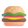
Pão de hambúrguerHamburgeraproximado Pão de cachorro-quenteHot dogaproximadoCucaícone da seçãosem íconefila: prioridade 3
Pão de cachorro-quenteHot dogaproximadoCucaícone da seçãosem íconefila: prioridade 3 BoloShortcakeaproximadoBolo de fubáShortcakeaproximadoBolo de cenouraShortcakeaproximadoBolo de chocolateShortcakeaproximadoBolo de milhoShortcakeaproximadoPamonhaEar of cornaproximadoBolo de mandiocaShortcakeaproximado
BoloShortcakeaproximadoBolo de fubáShortcakeaproximadoBolo de cenouraShortcakeaproximadoBolo de chocolateShortcakeaproximadoBolo de milhoShortcakeaproximadoPamonhaEar of cornaproximadoBolo de mandiocaShortcakeaproximado Bolo de aniversárioBirthday cakefielPão de melícone da seçãosem íconefila: prioridade 3Panetoneícone da seçãosem íconefila: prioridade 2Coxinhaícone da seçãosem íconefila: prioridade 2Esfihaícone da seçãosem íconefila: prioridade 2
Bolo de aniversárioBirthday cakefielPão de melícone da seçãosem íconefila: prioridade 3Panetoneícone da seçãosem íconefila: prioridade 2Coxinhaícone da seçãosem íconefila: prioridade 2Esfihaícone da seçãosem íconefila: prioridade 2 Sanduíche naturalSandwichfiel
Sanduíche naturalSandwichfielAçougue e peixaria
BifeCut of meatfielPicanhaCut of meatfielAlcatraCut of meatfielContrafiléCut of meatfielFilé mignonCut of meatfielMaminhaCut of meataproximadoFraldinhaCut of meataproximadoPatinhoCut of meataproximadoCoxão moleCut of meataproximadoCoxão duroCut of meataproximadoLagartoCut of meataproximadoAcémCut of meataproximadoPaletaCut of meataproximadoMúsculoCut of meataproximadoCupimCut of meataproximado CostelaMeat on boneaproximadoRabadaMeat on boneaproximadoMocotóícone da seçãosem íconefila: prioridade 3Dobradinhaícone da seçãosem íconefila: prioridade 3
CostelaMeat on boneaproximadoRabadaMeat on boneaproximadoMocotóícone da seçãosem íconefila: prioridade 3Dobradinhaícone da seçãosem íconefila: prioridade 3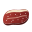
Carne de solícone próprioaproximadoCarne de bodeícone da seçãosem íconefila: prioridade 3Carne de carneiroícone da seçãosem íconefila: prioridade 3LomboCut of meataproximadoBistecaCut of meataproximadoCostela de porcoMeat on boneaproximadoPernilMeat on boneaproximadoTorresmoícone da seçãosem íconefila: prioridade 2Pé de porcoícone da seçãosem íconefila: prioridade 2Orelha de porcoícone da seçãosem íconefila: prioridade 2Kit feijoadaícone da seçãosem íconefila: prioridade 2Paioícone da seçãosem íconefila: prioridade 2 FrangoPoultry legaproximadoFrango caipiraPoultry legaproximadoPeito de frangoPoultry legaproximadoFilé de frangoPoultry legaproximadoCoxa de frangoPoultry legfielSobrecoxaPoultry legaproximadoAsa de frangoPoultry legaproximadoCoxinha da asaPoultry legfielPeruPoultry legaproximadoPão de alhoícone da seçãosem íconefila: prioridade 2
FrangoPoultry legaproximadoFrango caipiraPoultry legaproximadoPeito de frangoPoultry legaproximadoFilé de frangoPoultry legaproximadoCoxa de frangoPoultry legfielSobrecoxaPoultry legaproximadoAsa de frangoPoultry legaproximadoCoxinha da asaPoultry legfielPeruPoultry legaproximadoPão de alhoícone da seçãosem íconefila: prioridade 2Frios e laticínios
Leite fermentadoícone da seçãosem íconefila: prioridade 2Bebida lácteaícone da seçãosem íconefila: prioridade 2Manteiga de garrafaícone da seçãosem íconefila: prioridade 3QueijoCheese wedgefielMuçarelaCheese wedgeaproximadoQueijo pratoCheese wedgefielQueijo minasCheese wedgeaproximadoQueijo minas padrãoCheese wedgefielQueijo colonialCheese wedgefielParmesãoCheese wedgefielQueijo raladoícone da seçãosem íconefila: prioridade 2ProvoloneCheese wedgeaproximadoGorgonzolaCheese wedgeaproximadoQueijo goudaCheese wedgefielQueijo brieCheese wedgeaproximadoQueijo canastraCheese wedgefielQueijo do reinoCheese wedgeaproximadoQueijo manteigaCheese wedgeaproximadoRicotaícone da seçãosem íconefila: prioridade 2Queijo cottageícone da seçãosem íconefila: prioridade 2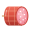
Mortadelaícone própriofielSalameícone da seçãosem íconefila: prioridade 2Salame colonialícone da seçãosem íconefila: prioridade 2SalsichaHot dogaproximadoCopaícone da seçãosem íconefila: prioridade 2Lombo canadenseícone da seçãosem íconefila: prioridade 2Patêícone da seçãosem íconefila: prioridade 3Massa de pastelícone da seçãosem íconefila: prioridade 2Macarrão frescoícone da seçãosem íconefila: prioridade 2Tofuícone da seçãosem íconefila: prioridade 2Congelados
 SorveteIce creamfielPicoléIce creamaproximado
SorveteIce creamfielPicoléIce creamaproximado Batata frita congeladaFrench friesaproximado
Batata frita congeladaFrench friesaproximadoMercearia
Ervilha secaícone da seçãosem íconefila: prioridade 2Proteína de sojaícone da seçãosem íconefila: prioridade 2 GranolaBowl with spoonaproximadoCereal matinalBowl with spoonaproximadoCanjicaícone da seçãosem íconefila: prioridade 2Chiaícone da seçãosem íconefila: prioridade 2Linhaçaícone da seçãosem íconefila: prioridade 2
GranolaBowl with spoonaproximadoCereal matinalBowl with spoonaproximadoCanjicaícone da seçãosem íconefila: prioridade 2Chiaícone da seçãosem íconefila: prioridade 2Linhaçaícone da seçãosem íconefila: prioridade 2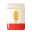
Farinha de trigoícone própriofielFarofa prontaícone da seçãosem íconefila: prioridade 2Farinha de milhoícone da seçãosem íconefila: prioridade 2Amido de milhoícone da seçãosem íconefila: prioridade 2Farinha de roscaícone da seçãosem íconefila: prioridade 2Polvilho doceícone da seçãosem íconefila: prioridade 2Polvilho azedoícone da seçãosem íconefila: prioridade 2Massa pubaícone da seçãosem íconefila: prioridade 3Saguícone da seçãosem íconefila: prioridade 2Mistura para boloícone da seçãosem íconefila: prioridade 2Gelatinaícone da seçãosem íconefila: prioridade 2Pó para pudimícone da seçãosem íconefila: prioridade 2Massa de lasanhaícone da seçãosem íconefila: prioridade 2 Macarrão instantâneoSteaming bowlaproximado
Macarrão instantâneoSteaming bowlaproximado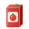
Molho de tomateícone própriofielTomate peladoCanned foodaproximado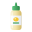
Maioneseícone própriofielMolho shoyuícone da seçãosem íconefila: prioridade 2Molho de pimentaícone da seçãosem íconefila: prioridade 2Molho inglêsícone da seçãosem íconefila: prioridade 2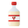
Vinagreícone própriofiel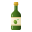
Azeiteícone própriofielAzeite de dendêícone da seçãosem íconefila: prioridade 2Tucupiícone da seçãosem íconefila: prioridade 3Banhaícone da seçãosem íconefila: prioridade 2Leite condensadoCanned foodaproximado MelHoney potfielMeladoHoney potaproximadoRapaduraícone da seçãosem íconefila: prioridade 2
MelHoney potfielMeladoHoney potaproximadoRapaduraícone da seçãosem íconefila: prioridade 2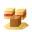
Tempero prontoícone próprioaproximadoMilho em lataCanned foodfielErvilha em lataCanned foodfielSeleta de legumesCanned foodfielAtum em lataCanned foodfielSardinha em lataCanned foodfielPêssego em caldaCanned foodaproximado Café solúvelHot beverageaproximadoCafé em cápsulaHot beverageaproximado
Café solúvelHot beverageaproximadoCafé em cápsulaHot beverageaproximado CháTeacup without handleaproximadoChá de camomilaTeacup without handleaproximadoChá de boldoTeacup without handleaproximadoChá-mateTeacup without handleaproximadoBiscoito de polvilhoícone da seçãosem íconefila: prioridade 2Rosquinhaícone da seçãosem íconefila: prioridade 2
CháTeacup without handleaproximadoChá de camomilaTeacup without handleaproximadoChá de boldoTeacup without handleaproximadoChá-mateTeacup without handleaproximadoBiscoito de polvilhoícone da seçãosem íconefila: prioridade 2Rosquinhaícone da seçãosem íconefila: prioridade 2 Biscoito de arrozRice crackeraproximadoTorradaícone da seçãosem íconefila: prioridade 2Barra de cerealícone da seçãosem íconefila: prioridade 2
Biscoito de arrozRice crackeraproximadoTorradaícone da seçãosem íconefila: prioridade 2Barra de cerealícone da seçãosem íconefila: prioridade 2 ChocolateChocolate barfielBombomChocolate baraproximadoChicleteícone da seçãosem íconefila: prioridade 3Granuladoícone da seçãosem íconefila: prioridade 3Bananadaícone da seçãosem íconefila: prioridade 2Batata chipsícone da seçãosem íconefila: prioridade 2Batata palhaícone da seçãosem íconefila: prioridade 2Salgadinho de pacoteícone da seçãosem íconefila: prioridade 2Ameixa secaícone da seçãosem íconefila: prioridade 2Sopa prontaSteaming bowlaproximado
ChocolateChocolate barfielBombomChocolate baraproximadoChicleteícone da seçãosem íconefila: prioridade 3Granuladoícone da seçãosem íconefila: prioridade 3Bananadaícone da seçãosem íconefila: prioridade 2Batata chipsícone da seçãosem íconefila: prioridade 2Batata palhaícone da seçãosem íconefila: prioridade 2Salgadinho de pacoteícone da seçãosem íconefila: prioridade 2Ameixa secaícone da seçãosem íconefila: prioridade 2Sopa prontaSteaming bowlaproximadoBebidas
 ÁguaPotable wateraproximadoGalão de águaPotable wateraproximadoÁgua com gásPotable wateraproximadoÁgua tônicaícone da seçãosem íconefila: prioridade 3RefrigeranteCup with strawaproximadoGuaranáCup with strawaproximadoCajuínaícone da seçãosem íconefila: prioridade 3
ÁguaPotable wateraproximadoGalão de águaPotable wateraproximadoÁgua com gásPotable wateraproximadoÁgua tônicaícone da seçãosem íconefila: prioridade 3RefrigeranteCup with strawaproximadoGuaranáCup with strawaproximadoCajuínaícone da seçãosem íconefila: prioridade 3 SucoBeverage boxfielSuco concentradoícone da seçãosem íconefila: prioridade 2Suco em póícone da seçãosem íconefila: prioridade 2Chá geladoCup with strawaproximadoAchocolatado de caixinhaBeverage boxaproximado
SucoBeverage boxfielSuco concentradoícone da seçãosem íconefila: prioridade 2Suco em póícone da seçãosem íconefila: prioridade 2Chá geladoCup with strawaproximadoAchocolatado de caixinhaBeverage boxaproximado Bebida de sojaGlass of milkaproximadoBebida vegetalGlass of milkaproximadoEnergéticoícone da seçãosem íconefila: prioridade 3Isotônicoícone da seçãosem íconefila: prioridade 3
Bebida de sojaGlass of milkaproximadoBebida vegetalGlass of milkaproximadoEnergéticoícone da seçãosem íconefila: prioridade 3Isotônicoícone da seçãosem íconefila: prioridade 3 CervejaBeer mugfielCerveja sem álcoolBeer mugaproximado
CervejaBeer mugfielCerveja sem álcoolBeer mugaproximado VinhoWine glassfiel
VinhoWine glassfiel EspumanteBottle with popping corkfielSidraBottle with popping corkaproximadoCachaçaícone da seçãosem íconefila: prioridade 3Vodcaícone da seçãosem íconefila: prioridade 3
EspumanteBottle with popping corkfielSidraBottle with popping corkaproximadoCachaçaícone da seçãosem íconefila: prioridade 3Vodcaícone da seçãosem íconefila: prioridade 3 UísqueTumbler glassfiel
UísqueTumbler glassfiel GimCocktail glassaproximadoConhaqueTumbler glassaproximadoLicorícone da seçãosem íconefila: prioridade 3
GimCocktail glassaproximadoConhaqueTumbler glassaproximadoLicorícone da seçãosem íconefila: prioridade 3Limpeza
 Veneno para ratoMouse trapaproximadoRatoeiraMouse trapfiel
Veneno para ratoMouse trapaproximadoRatoeiraMouse trapfiel VassouraBroomfiel
VassouraBroomfielHigiene e farmácia
 Papel higiênicoRoll of paperfielLenço umedecidoícone da seçãosem íconefila: prioridade 2Sabonete líquidoLotion bottleaproximadoXampuLotion bottleaproximadoCondicionadorLotion bottleaproximadoCreme de cabeloLotion bottleaproximadoTintura de cabeloícone da seçãosem íconefila: prioridade 3
Papel higiênicoRoll of paperfielLenço umedecidoícone da seçãosem íconefila: prioridade 2Sabonete líquidoLotion bottleaproximadoXampuLotion bottleaproximadoCondicionadorLotion bottleaproximadoCreme de cabeloLotion bottleaproximadoTintura de cabeloícone da seçãosem íconefila: prioridade 3 PenteHair pickaproximadoEscova de cabeloícone da seçãosem íconefila: prioridade 2Elástico de cabeloícone da seçãosem íconefila: prioridade 3Enxaguante bucalícone da seçãosem íconefila: prioridade 2HidratanteLotion bottlefielProtetor solarLotion bottleaproximadoEspuma de barbearícone da seçãosem íconefila: prioridade 2Cotoneteícone da seçãosem íconefila: prioridade 2Algodãoícone da seçãosem íconefila: prioridade 2Cortador de unhaícone da seçãosem íconefila: prioridade 2
PenteHair pickaproximadoEscova de cabeloícone da seçãosem íconefila: prioridade 2Elástico de cabeloícone da seçãosem íconefila: prioridade 3Enxaguante bucalícone da seçãosem íconefila: prioridade 2HidratanteLotion bottlefielProtetor solarLotion bottleaproximadoEspuma de barbearícone da seçãosem íconefila: prioridade 2Cotoneteícone da seçãosem íconefila: prioridade 2Algodãoícone da seçãosem íconefila: prioridade 2Cortador de unhaícone da seçãosem íconefila: prioridade 2 EsmalteNail polishfielAcetonaícone da seçãosem íconefila: prioridade 3Perfumeícone da seçãosem íconefila: prioridade 3Talcoícone da seçãosem íconefila: prioridade 2
EsmalteNail polishfielAcetonaícone da seçãosem íconefila: prioridade 3Perfumeícone da seçãosem íconefila: prioridade 3Talcoícone da seçãosem íconefila: prioridade 2 MamadeiraBaby bottlefielPreservativoícone da seçãosem íconefila: prioridade 3
MamadeiraBaby bottlefielPreservativoícone da seçãosem íconefila: prioridade 3 CurativoAdhesive bandagefielGazeícone da seçãosem íconefila: prioridade 2Esparadrapoícone da seçãosem íconefila: prioridade 2Ataduraícone da seçãosem íconefila: prioridade 2
CurativoAdhesive bandagefielGazeícone da seçãosem íconefila: prioridade 2Esparadrapoícone da seçãosem íconefila: prioridade 2Ataduraícone da seçãosem íconefila: prioridade 2 Máscara descartávelFace with medical maskaproximadoPastilha para gargantaícone da seçãosem íconefila: prioridade 2Porta-comprimidosícone da seçãosem íconefila: prioridade 3Bolsa térmicaícone da seçãosem íconefila: prioridade 3
Máscara descartávelFace with medical maskaproximadoPastilha para gargantaícone da seçãosem íconefila: prioridade 2Porta-comprimidosícone da seçãosem íconefila: prioridade 3Bolsa térmicaícone da seçãosem íconefila: prioridade 3Pet
 Ração de cachorroDog faceaproximadoSachê de cachorroDog faceaproximado
Ração de cachorroDog faceaproximadoSachê de cachorroDog faceaproximado Ração de gatoCat faceaproximadoSachê de gatoCat faceaproximadoPetisco de gatoCat faceaproximadoAreia de gatoícone da seçãosem íconefila: prioridade 2Tapete higiênicoícone da seçãosem íconefila: prioridade 3Saquinho para cocôícone da seçãosem íconefila: prioridade 3
Ração de gatoCat faceaproximadoSachê de gatoCat faceaproximadoPetisco de gatoCat faceaproximadoAreia de gatoícone da seçãosem íconefila: prioridade 2Tapete higiênicoícone da seçãosem íconefila: prioridade 3Saquinho para cocôícone da seçãosem íconefila: prioridade 3 Ração de peixeTropical fishaproximadoAntipulgasícone da seçãosem íconefila: prioridade 3Xampu de cachorroLotion bottleaproximadoColeiraícone da seçãosem íconefila: prioridade 3Comedouroícone da seçãosem íconefila: prioridade 3Brinquedo para petícone da seçãosem íconefila: prioridade 3
Ração de peixeTropical fishaproximadoAntipulgasícone da seçãosem íconefila: prioridade 3Xampu de cachorroLotion bottleaproximadoColeiraícone da seçãosem íconefila: prioridade 3Comedouroícone da seçãosem íconefila: prioridade 3Brinquedo para petícone da seçãosem íconefila: prioridade 3Outros
 LâmpadaLight bulbfiel
LâmpadaLight bulbfiel FósforoFireaproximadoIsqueiroFireaproximadoCarvãoícone da seçãosem íconefila: prioridade 2
FósforoFireaproximadoIsqueiroFireaproximadoCarvãoícone da seçãosem íconefila: prioridade 2 ExtensãoElectric plugaproximadoAdaptador de tomadaElectric plugaproximadoFita adesivaícone da seçãosem íconefila: prioridade 3Colaícone da seçãosem íconefila: prioridade 3
ExtensãoElectric plugaproximadoAdaptador de tomadaElectric plugaproximadoFita adesivaícone da seçãosem íconefila: prioridade 3Colaícone da seçãosem íconefila: prioridade 3 Agulha de costuraSewing needlefiel
Agulha de costuraSewing needlefiel AlfineteSafety pinfielCopo descartávelícone da seçãosem íconefila: prioridade 2Prato descartávelícone da seçãosem íconefila: prioridade 2
AlfineteSafety pinfielCopo descartávelícone da seçãosem íconefila: prioridade 2Prato descartávelícone da seçãosem íconefila: prioridade 2 Talher descartávelFork and knifeaproximadoCanudoícone da seçãosem íconefila: prioridade 2
Talher descartávelFork and knifeaproximadoCanudoícone da seçãosem íconefila: prioridade 2 Papel de presenteWrapped giftaproximadoPresenteWrapped giftfiel
Papel de presenteWrapped giftaproximadoPresenteWrapped giftfiel Sacola retornávelShopping bagsaproximado
Sacola retornávelShopping bagsaproximado ChineloThong sandalfiel
ChineloThong sandalfiel Recarga de celularMobile phoneaproximado
Recarga de celularMobile phoneaproximado